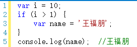
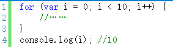
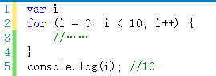
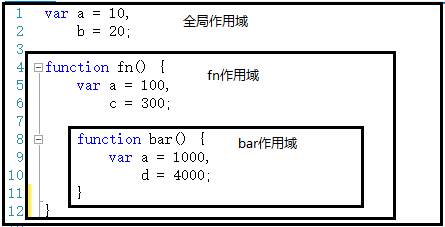
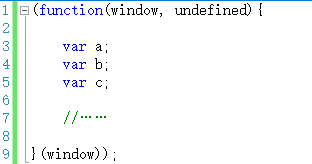

简介【作用域】
提到作用域，有一句话大家（有js开发经验者）可能比较熟悉：“javascript没有块级作用域”。所谓“块”，就是大括号“｛｝”中间的语句。例如if语句：

再比如for语句：

所以，我们在编写代码的时候，不要在“块”里面声明变量，要在代码的一开始就声明好了。以避免发生歧义。如：

其实，你光知道“javascript没有块级作用域”是完全不够的，你需要知道的是——javascript除了全局作用域之外，只有函数可以创建的作用域。
所以，我们在声明变量时，全局代码要在代码前端声明，函数中要在函数体一开始就声明好。除了这两个地方，其他地方都不要出现变量声明。而且建议用“单var”形式。
jQuery就是一个很好的示例：

下面继续说作用域。作用域是一个很抽象的概念，类似于一个“地盘”

如上图，全局代码和fn、bar两个函数都会形成一个作用域。而且，作用域有上下级的关系，上下级关系的确定就看函数是在哪个作用域下创建的。例如，fn作用域下创建了bar函数，那么“fn作用域”就是“bar作用域”的上级。
作用域最大的用处就是隔离变量，不同作用域下同名变量不会有冲突。例如以上代码中，三个作用域下都声明了“a”这个变量，但是他们不会有冲突。各自的作用域下，用各自的“a”。
说到这里，咱们又可以拿出jquery源码来讲讲了。
jQuery源码的最外层是一个自动执行的匿名函数：

为什么要这样做呢？
原因就是在jQuery源码中，声明了大量的变量，这些变量将通过一个函数被限制在一个独立的作用域中，而不会与全局作用域或者其他函数作用域的同名变量产生冲突。
全世界的开发者都在用jQuery，如果不这样做，很可能导致jQuery源码中的变量与外部javascript代码中的变量重名，从而产生冲突。
作用域这块只是很不好解释，咱们就小步快跑，一步一步慢慢展示给大家。
下一节将把作用域和执行上下文环境结合起来说一说。
可见，要理解闭包，不是一两句话能说清楚的。。。